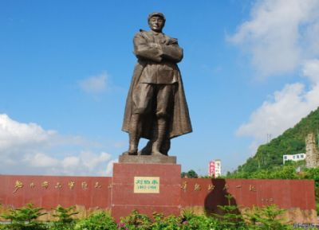
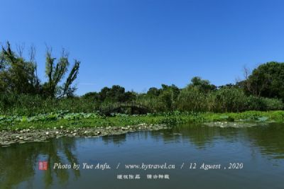
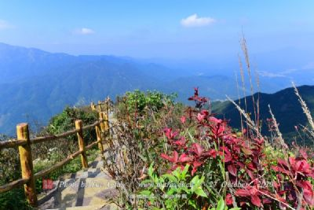

全国粮食生产先进单位
开州区
隶属于重庆市，位于重庆市东北部，三峡库区小江
支流回水末端，北依巴山，南近长江，西与四川省接壤
。至2015年底，开州区幅员面积3959平方公里，户籍人
168.35万。辖26个镇、7个街道、7个乡。
2015年开州区实现生产总值3259784万元，2014年
增长11.6%（可比价）。其中，第一、二、三产业分别
实现增加值525284万元、1651438万元、1083062万元，分
别比2014年增长4.7%、14.6%、10.3%。
2011年，被重庆市政府列入“民生工业试点园区”，
被表彰为“渝东北优秀园区”。获得过“2013中国休闲小
城”、“全国粮食生产先进单位”等荣誉称号。三次得“全
国双拥模范城（县）”称号（2000年、2003年、2011年），
2016年是开州第四次获此殊荣。2016年6月，国务院正
式批准，撤销重庆市开县，设立重庆市开州区。
|  | 刘伯承同志纪念馆位于重庆市开县汉丰街道盛山公园内，于1992年12月建成正式对外开放，邓小平亲笔题写“刘伯承同志纪念馆”馆名。纪念馆先后两次扩建，现占地60亩，由主展馆和东西部景区组成。主展览馆分内外两进院落，内院为陈列布展厅，共有展厅6间，以回廊相连，外院有书画厅。纪念馆西部景区修建了借远桥 |
|  | 汉丰湖位于重庆市东北部的开县境内，是举世瞩目的长江三峡工程建设而形成的世界上独具特色的人工湖，开县移民新城座落在此湖畔，构成“城在湖中，湖在山中，意在心中”的美丽画境汉丰湖东西跨度12.51公里，南北跨度5.86公里，西段较狭窄，东段较开阔，其中最窄处为92米，最宽处为1589米 |
|  | 龙头嘴森林公园位于重庆市开州区紫水乡雄鹰村，海拔高度1200—1600米，总占地面积322公顷，主要为针叶林、阔叶林，还有部分草地、耕地和荒地。游人漫步林中，常见松鼠跳跃林间，百鸟鸣唱枝头，野鸡奔跑林中，苍鹰盘旋蓝天 |